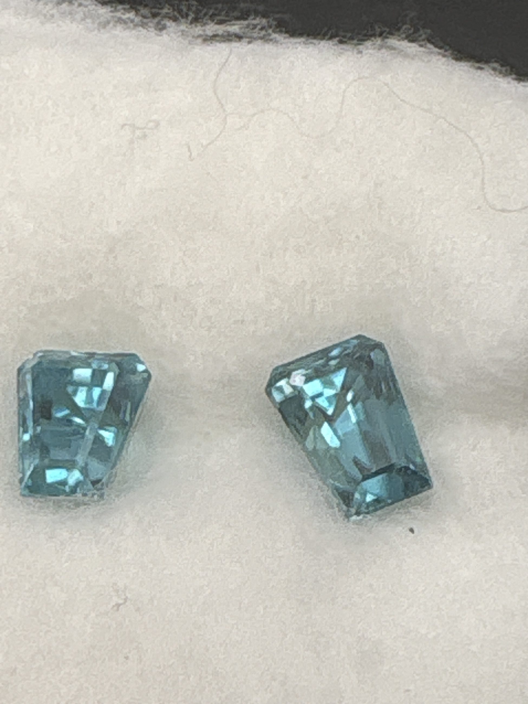

The Gem Drawer › No. 89

Two teal-blue emerald/step “fancy cut” zircons.
| Catalogue no. | #89 |
|---|---|
| As labeled | Blue Zircon - PAIR, 2 stones in this box, see notes |
| Shape / cut | Emerald / step, "fancy cut" (both stones) |
| Weight | 2.50 (combined, presumed) |
| Measurements | Not recorded |
| Colour | Teal-blue |
| Clarity / condition | Not recorded |
Interested in this stone, or in the collection as a whole? Terry VanWormer can answer questions about it.
Click here to inquireor email Terry directly at maxrebo34@gmail.com